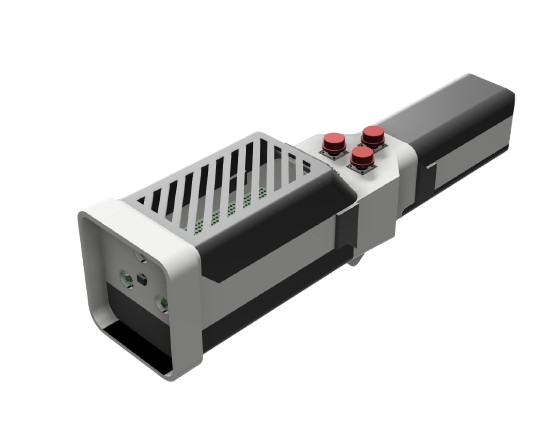
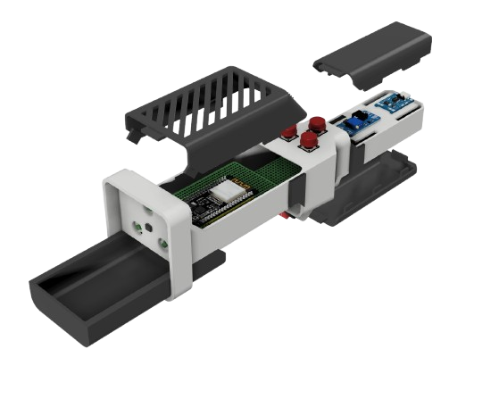
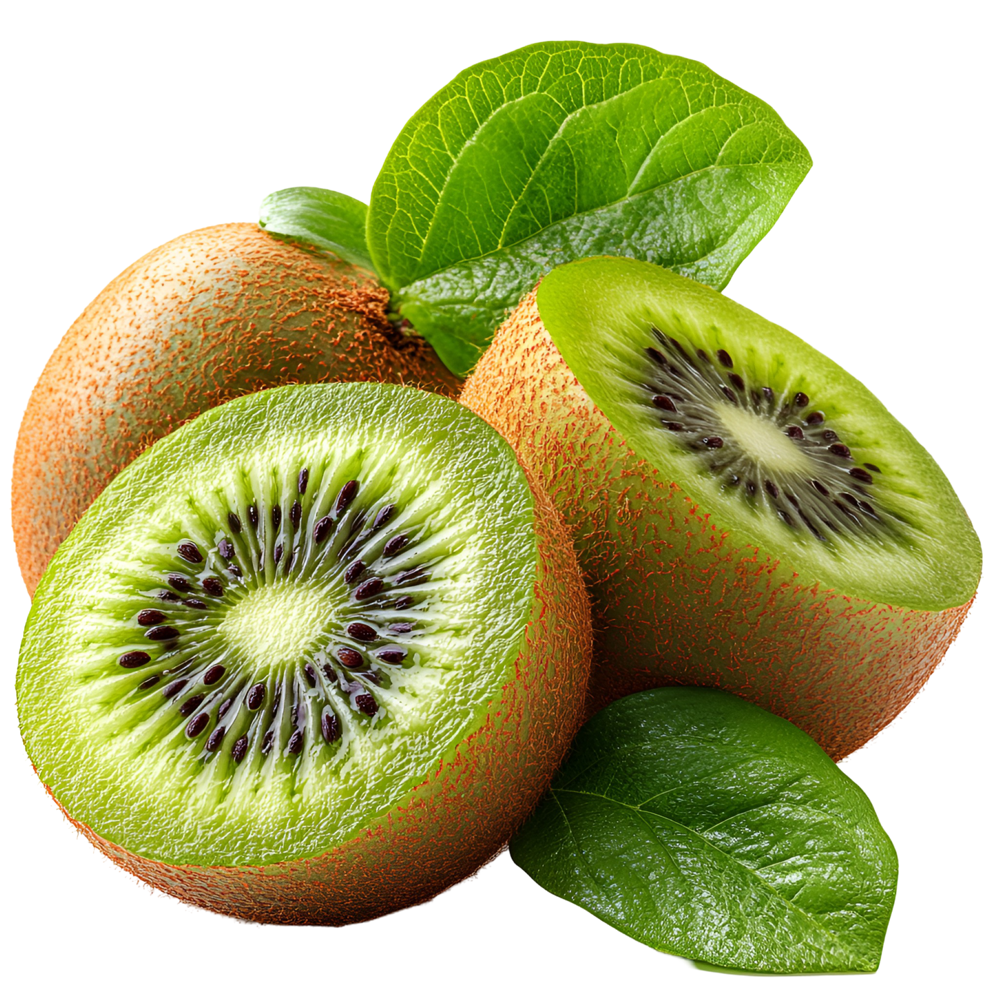

SMART AGRICULTURE TECHNOLOGY
Ketahui Tingkat Kemanisan dan Kematangan Buah Kiwi dengan Mudah.
Teknologi pengukuran non-destruktif berbasis sensor optik yang membantu UMKM, petani, dan pelaku industri menilai kualitas buah secara cepat, akurat, dan real-time tanpa merusak produk.

Desain Perangkat Utama
3D Model Spektrofotometer Non-Destruktif

Struktur Internal
Integrasi ESP32 & Optik

Target Komoditas
Prediksi Nilai Brix Jaringan
Single-Wavelength Optic
Menggunakan panjang gelombang spektrum IR 850nm untuk penetrasi lapisan kulit kiwi secara akurat tanpa merusak buah.
Logarithmic Regression
Data mentah ADC diproses langsung di *edge node* ESP32 menggunakan rumus regresi empiris berbasis kurva kalibrasi laboratorium.
Firebase Sync
Sinkronisasi data otomatis dari kebun via hotspot seluler langsung ke cloud database tanpa membebani penyimpanan lokal hardware.